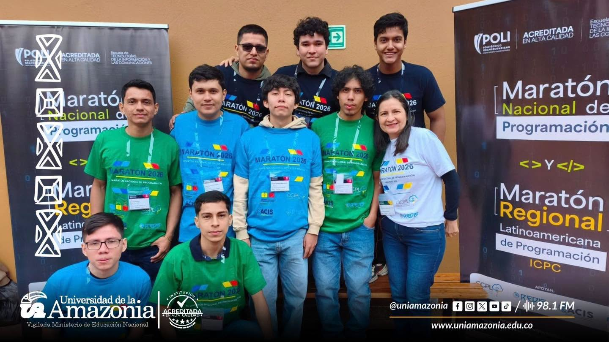

3 oct 2026Ingeniería de Sistemas participa en la XL Maratón Nacional de Programación
Estudiantes de Ingeniería de Sistemas de la Universidad de la Amazonia participan en la XL Maratón Nacional de Programación ACIS/REDIS 2026, realizada en Bogotá. Los equipos ponen a prueba sus habilidades en programación, análisis y resolución de problemas con el acompañamiento de su docente coach.
Leer más